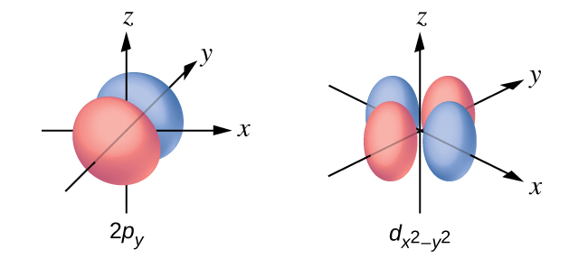
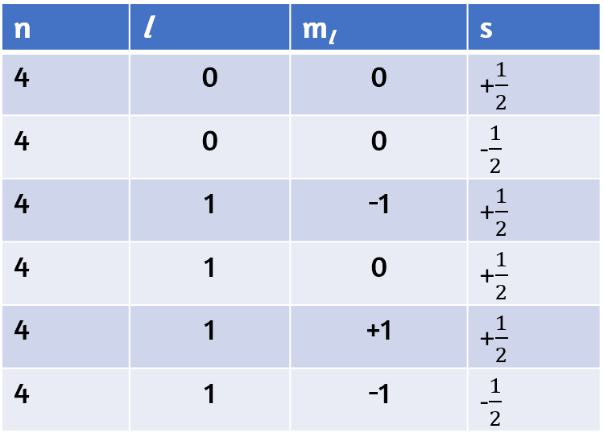
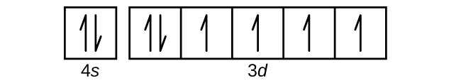

1. El espectro consiste en líneas de colores, al menos una de las cuales (probablemente la más brillante) es roja.
3. 3.15 m
5. 3.233 × 10−19 J; 2.018 eV
7. ν = 4.568 × 1014 s; λ = 656,3 nm; Energía mol−1 = 1.823 × 105 J mol−1; rojo
9. (a) λ = 8.69 × 10−7 m; E = 2,29 × 10−19 J; (b) λ = 4.59 × 10−7 m; E = 4,33 × 10−19 J; El color de (a) es rojo; (b) es azul.
11. E = 9.502 × 10−15 J; ν = 1.434 × 1019 s−1
13. Rojo: 660 nm; 4,54 × 1014 Hz; 3.01 × 10−19 J. Verde: 520 nm; 5.77 × 1014 Hz; 3,82 x 10−19 J. Azul: 440 nm; 6.81 × 1014 Hz; 4.51 × 10−19 J. También son posibles números algo diferentes.
15. 5.49 × 1014 s−1; no
17. Energía cuantificada significa que los electrones pueden poseer solo ciertos valores de energía discretos; No se permiten valores entre esos valores cuantificados.
19. E = E2 − E5 = 2.179 × 10-18(1n22 − 1n52) J
= 2.179 × 10−18(122 − 152) = 4.576 × 10-19 J
= 4.576 × 10-19 J/1.602×10-19J/eV-1
21. −8.716 × 10−18 J
23. −3.405 × 10−20 J
25. 33.9 Å
27. 1.471 × 10−17 J
29. Ambos involucran un núcleo relativamente pesado con electrones moviéndose alrededor de él, aunque estrictamente hablando, el modelo de Bohr funciona solo para átomos o iones de un electrón. De acuerdo con la mecánica clásica, el modelo de Rutherford predice un "sistema solar" en miniatura con electrones que se mueven alrededor del núcleo en órbitas circulares o elípticas que se limitan a los planos. Si se ignoran los requisitos de la teoría electromagnética clásica de que los electrones en dichas órbitas emitirían radiación electromagnética, dichos átomos serían estables, con energía constante y momento angular, pero no emitirían ninguna luz visible (contrariamente a la observación). Si se aplica la teoría electromagnética clásica, entonces el átomo de Rutherford emitirá radiación electromagnética de frecuencia en continuo aumento (contrariamente a los espectros discretos observados), perdiendo energía hasta que el átomo colapse en un tiempo absurdamente corto (contrariamente a la estabilidad observada a largo plazo de los átomos). El modelo de Bohr conserva la vista clásica de la mecánica de las órbitas circulares confinadas a los planos que tienen energía constante y momento angular, pero las restringe a valores cuantificados que dependen de un solo número cuántico, n. Se supone que el electrón en órbita en el modelo de Bohr no emite ninguna radiación electromagnética mientras se mueve alrededor del núcleo en sus órbitas estacionarias, pero el átomo puede emitir o absorber radiación electromagnética cuando el electrón cambia de una órbita a otra. Debido a las órbitas cuantizadas, tales "saltos cuánticos" producirán espectros discretos, de acuerdo con las observaciones.
31. Ambos modelos tienen un núcleo central de carga positiva con electrones que se mueven alrededor del núcleo de acuerdo con el potencial electrostático de Coulomb. El modelo de Bohr supone que los electrones se mueven en órbitas circulares que tienen energías cuantificadas, momento angular y radios que se especifican mediante un número cuántico único, n = 1, 2, 3, ..., pero esta cuantización es un supuesto ad hoc realizado por Bohr para incorporar la cuantización en una descripción mecánica esencialmente clásica del átomo. Bohr también asumió que los electrones que orbitan el núcleo normalmente no emiten ni absorben radiación electromagnética, pero lo hacen cuando el electrón cambia a una órbita diferente. En el modelo mecánico cuántico, los electrones no se mueven en órbitas precisas (tales órbitas violan el principio de incertidumbre de Heisenberg) y, en cambio, se usa una interpretación probabilística de la posición del electrón en cualquier momento dado, con una función matemática llamada función de onda que se puede utilizar para determinar la distribución de probabilidad espacial del electrón. Estas funciones de onda, u orbitales, son ondas estacionarias tridimensionales que pueden ser especificadas por tres números cuánticos que surgen naturalmente de sus matemáticas subyacentes (no se requieren suposiciones ad hoc): el número cuántico principal, n (el mismo utilizado por Bohr), que especifica capas tales que los orbitales que tienen el mismo n todos tienen la misma energía y aproximadamente la misma extensión espacial; el número cuántico de momento angular l, que es una medida del momento angular del orbital y corresponde a las formas generales de los orbitales, así como la especificación de subcapas tales que los orbitales que tienen la misma l (yn) tienen la misma energía; y el número cuántico de orientación m, que es una medida de la componente z del momento angular y corresponde a las orientaciones de los orbitales. El modelo de Bohr da la misma expresión para la energía que la expresión mecánica cuántica y, por lo tanto, ambas explican adecuadamente el espectro discreto del hidrógeno (un ejemplo de obtener las respuestas correctas por razones incorrectas, algo con lo que muchos estudiantes de química pueden simpatizar), pero da la expresión incorrecta para el momento angular (las órbitas de Bohr necesariamente tienen un momento angular distinto de cero, pero algunos orbitales cuánticos [los orbitales s] pueden tener un momento angular cero).
33. n determina el rango general para el valor de la energía y las distancias probables que el electrón puede tener desde el núcleo. l determina la forma del orbital. m1 determina la orientación de los orbitales del mismo valor l con respecto a los demás. ms determina el espín de un electrón.
35. (a) 2p; (b) 4d; (c) 6s
37. (a) 3d; (b) 1s; (c) 4f
39.

41. (a) x.2, y.2, z.2; (b) x.1, y.3, z.0; (c) x.4 0 0 1/2, y. 2 1 0 1/2, z. 3 2 0 1/2; (d) x. 1, y. 2, z. 3; (e) x. l = 0, ml = 0, y. l = 1, ml = –1, 0, o +1, z. l = 2, ml = –2, –1, 0, +1, +2
43. 12
45.

47. Por ejemplo, Na+: 1s22s22p6; Ca2+: 1s22s22p6; Sn2+: 1s22s22p63s23p63d104s24p64d105s2; F-: 1s22s22p6; O2-: 1s22s22p6; Cl-: 1s22s22p63s23p6.
49. (a) 1s22s22p3; (b) 1s22s22p63s23p2; (c) 1s22s22p63s23p64s23d6; (d) 1s22s22p63s23p64s23d104p65s24d105p4; (e) 1s22s22p63s23p64s23d104p65s24d105p66s24f9
51. La carga sobre el ion.
53. (a)
(b)
(c)

(d)
(e)
55. Zr
57. Rb+, Se2-
59. Aunque ambos (b) y (c) son correctos, (e) abarca ambos y es la mejor respuesta.
61. K
63. 1s22s22p63s23p63d104s24p64d105s25p66s24f145d10
65. Co tiene 27 protones, 27 electrones y 33 neutrones: 1s22s22p63s23p64s23d7. Tengo 53 protones, 53 electrones y 78 neutrones: 1s22s22p63s23p63d104s24p64d105s25p5.
67. Cl
69. O
71. Rb < Li < N < F
73. 15 (5A)
75. Mg < Ca < Rb < Cs
77. Si4+ < Al3+ < Ca2+ < K+
79. Se, As-
81. Mg2+ < K+ < Br- < As3-
83. O, IE1
85. Ra